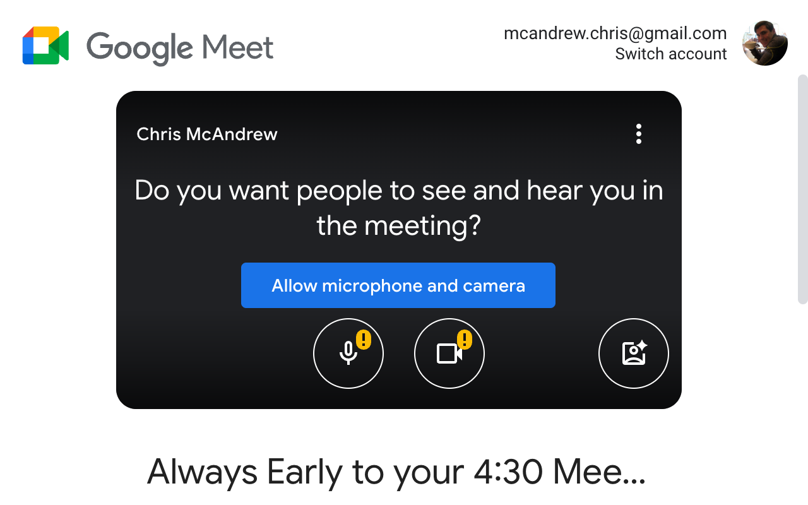
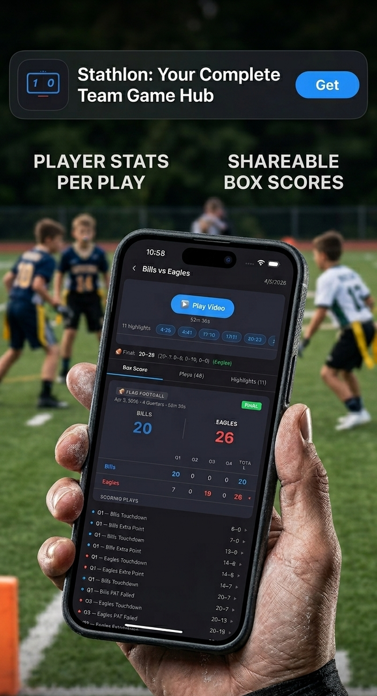
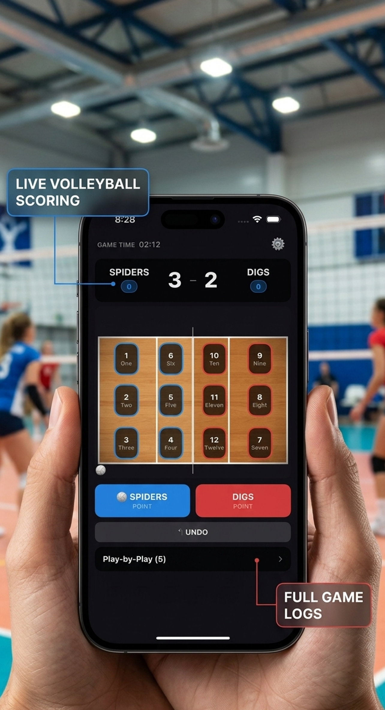
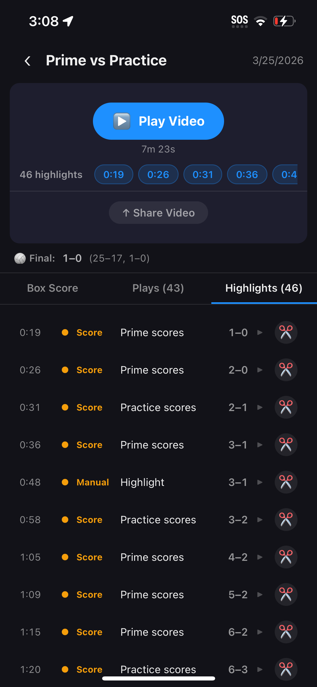
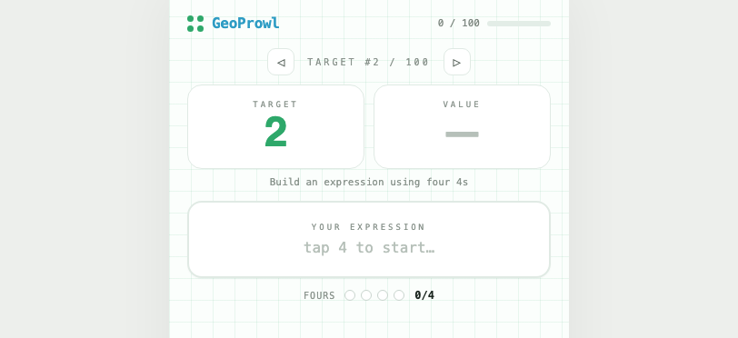
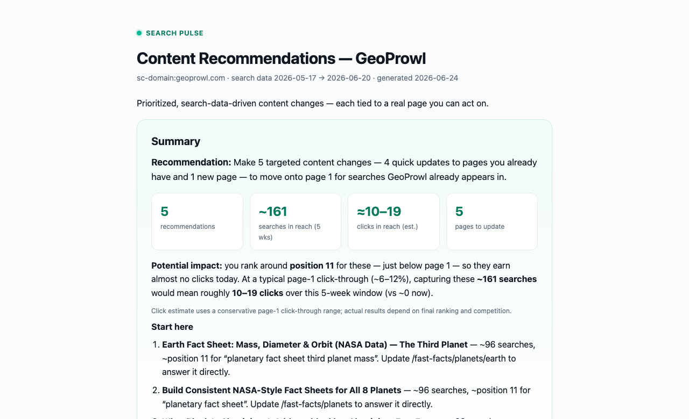

Every project here starts with a real problem: friction worth solving,
not a market to chase. What they show is execution: the technical range
to build the fix, and the discipline to ship it.
Problem→Build→Ship→Solved
01
Featured work
Live · Chrome Web Store
Always Early
Your next meeting, already open.
Back-to-back calendar days tax you with the same micro-friction:
hunting for the right meeting link and watching the clock. Always
Early removes it — the right meeting opens itself, a beat before it starts.
Set it once — calendar connected, choose your lead time.
Chrome MV3
Vanilla JS
Google Calendar API
chrome.alarms
Zero build
The ship-cycle
01 / Problem
Back-to-back meetings mean constant link-hunting and clock-watching.
02 / Solution
Reads Google Calendar (read-only OAuth), schedules a per-event chrome.alarms trigger, and opens the right link 2 minutes before start.

The meeting opens itself, a beat before it starts.
03 / Hard part
Manifest V3 suspends service workers, so timing runs on persisted alarms (meeting::<eventId>) plus chrome.storage.session, with silent 401 token refresh.
04 / PM insight
Shipped, got rejected for one unneeded permission, then removed it and resubmitted rather than arguing. Minimal-permission, zero-dependency by design — the maturity is in what's left out.
Baseball already has a dozen scoring apps — youth volleyball and flag
football have almost none. Stathlon scores, streams, and clips
highlights live for exactly the sports the big apps overlook.


React Native
Supabase
Social login
StoreKit IAP
AWS IVS streaming
Cloudflare R2
Native Swift
CI/CD → TestFlight
The ship-cycle
01 / Problem
At volleyball and flag-football games, parents juggle a paper scorebook, a phone camera, and a group chat — and the best moments vanish unrecorded.
02 / Solution
One iOS app scores each sport on its own rules, streams over RTMP, auto-clips highlights, and shares a web box score at stathlon.com.

Auto-clipped highlights, with the box score attached.
03 / Hard part
Every sport needs its own rules engine — and when api.video's US cloud shut down mid-build, streaming was re-architected onto AWS IVS rather than stall. A native Swift scoreboard overlay and an RLS team-access chain gate every event.
04 / PM insight
The insight was the gap: baseball already has good scoring apps, so Stathlon leads with the sports they ignore, flag football and volleyball first, with new sports added as the app matures.
My kids' school software dressed up empty games as "educational."
GeoProwl is the answer — led by a daily challenge whose clues an LLM
writes from real government data, plus games I built for my own kids.
GeoProwl Daily — clues an LLM writes from real data.gov data.
Next.js
TypeScript
LLM clue-gen
data.gov API
NGSS-aligned
The ship-cycle
01 / Problem
The "educational" games my kids got at school were just games — no real substance, and no way to know what was behind them.
02 / Solution
GeoProwl Daily leads — an LLM turns real data.gov data into a fair, solvable daily puzzle. Then come the games I built for my kids: Just States, Four Fours, and Lunar Landing.

Four Fours — one of three games built for my kids.
03 / Hard part
The daily puzzle has to be fair and solvable every time — so the pipeline pulls real data.gov figures, has an LLM draft clues from them, and validates each one before it reaches a kid.
04 / PM insight
Built for a real user I know well — my own kids. Each game is something I can stand behind because I know exactly what's under it, and new modules ship on a cadence rather than as a one-off.
Real output — a raw game recording auto-cut into a branded highlight clip.
Why it's interesting
It's a self-contained micro-service — one ffmpeg Lambda behind a clean POST contract — that Stathlon calls without knowing how it works. Pulling the heavy video processing out of the app kept the client thin and let this piece scale and deploy on its own. A small but genuinely end-to-end slice of a much larger product: presign → cut → brand → store → return.
Data · Analytics
Search Pulse
Turn Search Console data into ranked, ready-to-act SEO recommendations.
GSC API
Next.js
Supabase

Real output — GeoProwl content recommendations.
Why it's interesting
Search Pulse is the analytics engine behind my own sites, built as a standalone service: it pulls Google Search Console data, ranks the opportunities, and emits a ready-to-act report like the GeoProwl one above. Validating it on one real site first means it can point at any property next — the same pattern as the Clipping API, a constrained end-to-end tool that plugs into a bigger whole.
03
How I work
Scope to the job
Build only what the job actually needs, and stop there. Extra scope is easy to add later and hard to walk back once it's shipped.
Ship through constraints
Platform reviews, API limits, and lifecycle quirks show up in every project. Planning around them from day one is what makes shipping possible.
Own the full cycle
From idea and architecture to store review, deploy, and iteration, I stay accountable end to end.